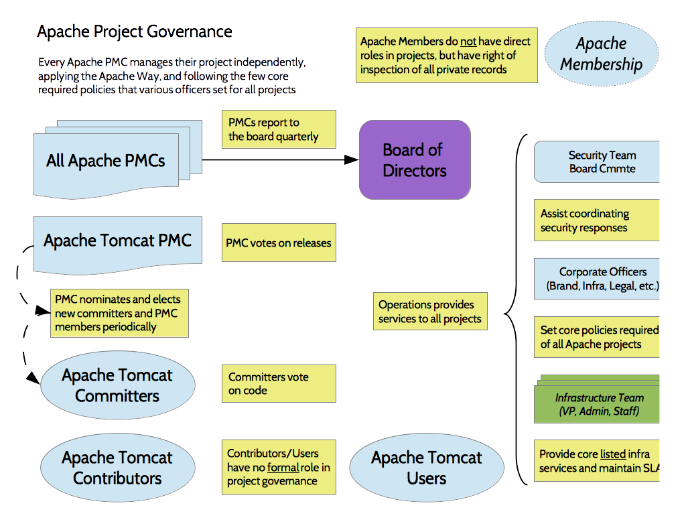

At a high level, organizational governance at the Apache Software Foundation (ASF) is fairly simple: the Members elect a Board of Directors; the Board appoints various officers and creates PMCs; the PMCs report periodically to the board, and most other officers report through the President, who reports for them to the board.
Click in the image map to learn more about a role.
Existing Members nominate and elect new members periodically, and annually nominate and elect nine Directors to the board.
The board appoints operational officers, and delegates responsibility for specific policy or operational areas to each officer. For example, the VP, Legal Affairs Committee is responsible for setting legal policy for the ASF and all Apache projects, and working with corporate counsel.
The board appoints executive officers, including a President, Secretary, and Treasurer, who are responsible for specific operations of the ASF.
Most officers report directly to the President on a monthly basis, and the President reports an overall operational status to the board at each meeting.
The VP, Infra reports to the President, and provides high-level oversight of the operations of the infrastructure team. Within the team, a paid Infra Admin helps manage daily operations and prioritize work with the paid staff who maintain services all Apache projects use.

PMCs report directly to the board quarterly. The board exercises organizational oversight of PMCs, ensuring that they are functioning as a healthy and meritocratic community, and that they are following Apache policies. The board does not provide technical governance; that is handled within the PMC itself.
The Chair of each PMC is a Vice President of that project, and thus is an officer of the ASF. The primary duty of the chair is to ensure that the project's reports are complete and submitted to the board.
PMCs vote on software product releases. This ensures that all source code releases are acts of the ASF itself, through its properly-governed PMC.
PMCs nominate and elect new committers to their project. PMCs also nominate and vote on new PMC members, whom the PMC then recommends to the board for approval.
The Apache Incubator is a special (I)PMC: it's work is to mentor new podling communities to help them learn the Apache Way. After each podling votes on their software releases, the IPMC members provide oversight and vote on that podling's release process as well, to ensure the podling is progressing towards becoming a full Apache project.
By policy, only individuals may serve as Members, committers, PMC members or ASF officers. This is one way that the ASF and Apache projects preserve their independence.
Source for org chart graphics stored in an Apache OpenOffice file.